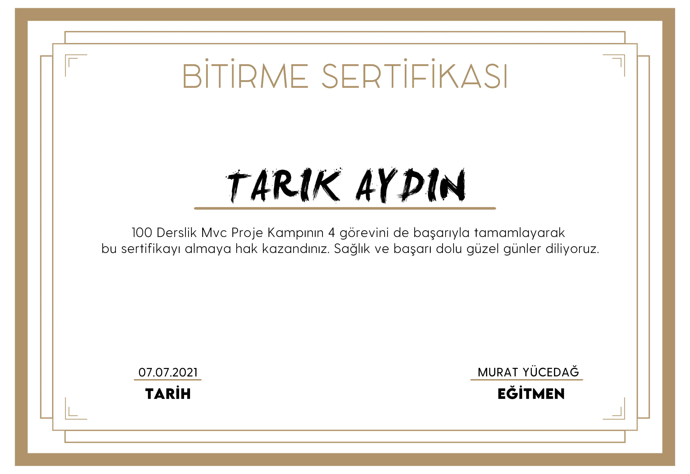

.Net Framework MVC Dersleri
MVC Proje Kampı, Youtube'da Murat Yücedağ isimli hocamızın yayınladığı 100 derslik .Net Framework MVC ile proje geliştirmeye yönelik ücretsiz bir eğitimdir.
Eğitimi tamamlayıp verilen görevleri yerine getiren öğrencilere sertifika verilmektedir.
Dersin ilk videosuna sol tarafan ulaşabilirsiniz. 100 dersin tamamını görmek için tıklayınız.
Youtube kanalına ulaşmak için tıklayınız.
Eğitimi tamamlamış olduğum GitHub repomu görmek için tıklayınız.
Bu eğitimde, .Net Framework 4 ile MVC design pattern kullanılarak bir katmanlı mimari üzerinde web projesi geliştirilmekte.
Model,View,Controller,Layout,PartialView,EntityFramework ile temel CRUD işlemleri,
Repository Patterns,Fluent Validation,Authentication,Session gibi akla gelebilecek birçok konu işleniyor.

Eğitimin devamı niteliğinde olan Asp.Net Core 5.0 eğitimine ulaşmak için tıklayınız.